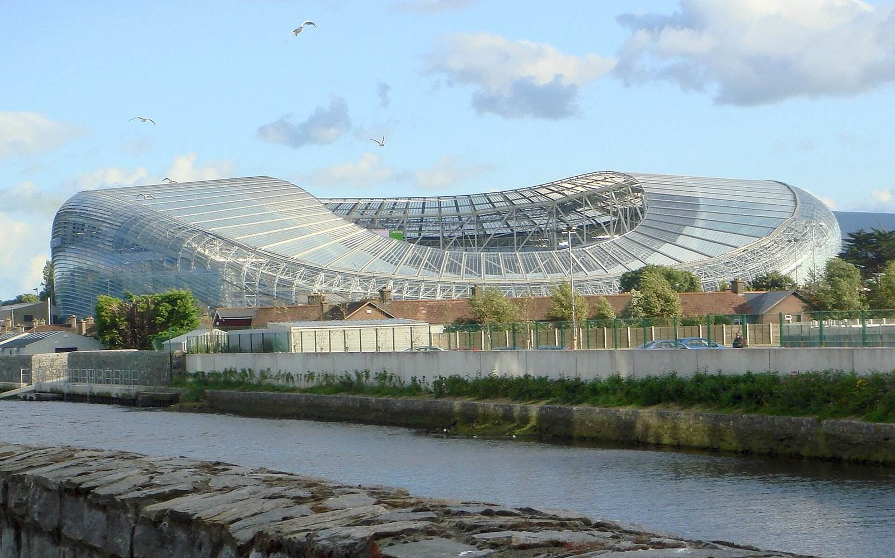

Sports · Other Sports
Guinness Men's Six Nations 2027
- Dates
- –
- Venue
- Aviva Stadium
- Location
- Dublin, Ireland
- Format
- In-person
- Category
- Other Sports
- Industry
- Rugby
- Organiser
- Six Nations Rugby
- Official website
- https://www.sixnationsrugby.com/
About
Dates are the official championship window of 5 February-13 March 2027. The record is pinned at Aviva Stadium, Dublin, venue of the opening match (Ireland v England, 5 February). Subsequent rounds are played at the official home stadiums across the Six Nations, with Super Saturday on 13 March.
Topics: Six Nations, rugby union, championship.
No organiser attendance figure found on the official pages fetched 24 Nov 2026 for this upcoming edition. Ranked by our estimated size tier 'very large' (100,000+ attendees/visits), a judgement from format, venue and scale, not an official number.
Sources
- Official — https://www.sixnationsrugby.com/en/m6n/news/mens-six-nations-2027-fixtures-and-schedule-confirmed
- Official — https://www.englandrugby.com/follow/news-and-media/englands-2027-guinness-mens-six-nations-fixtures-announced
- Official website — https://www.sixnationsrugby.com/